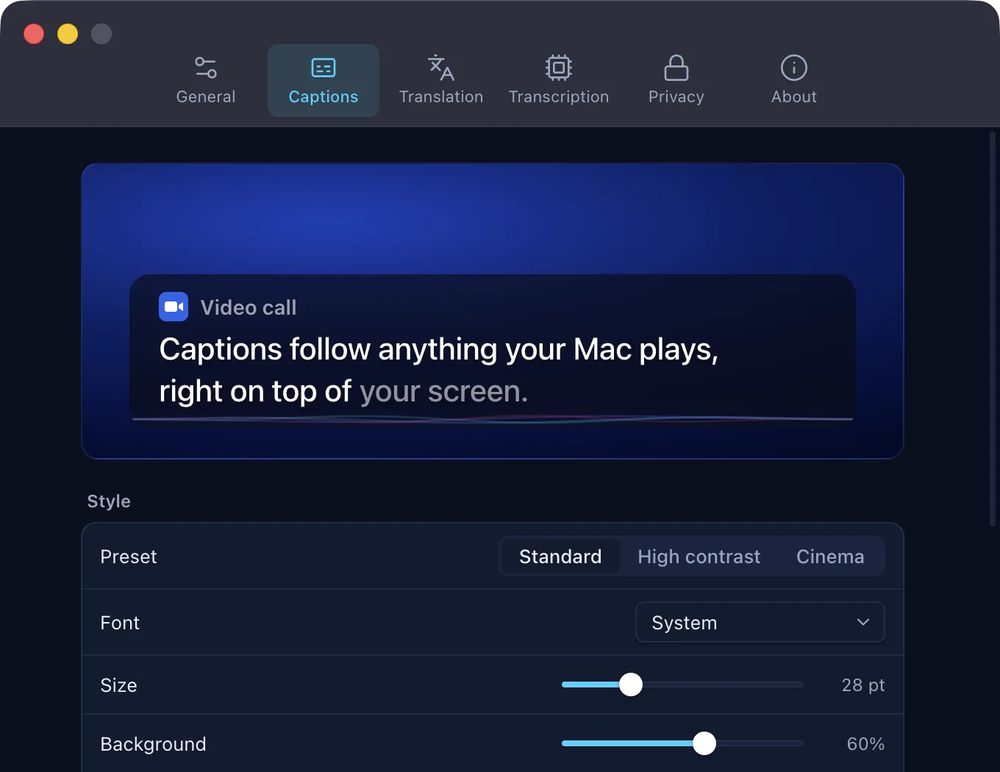
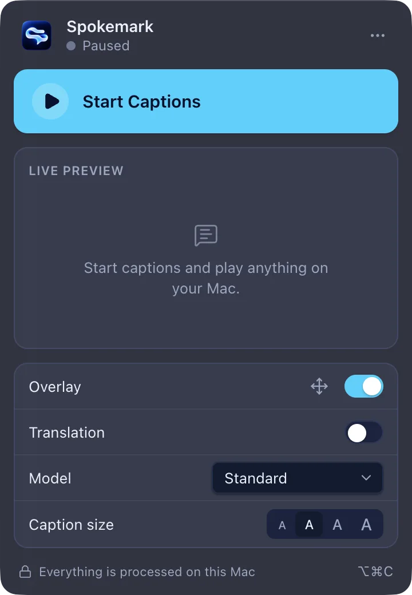
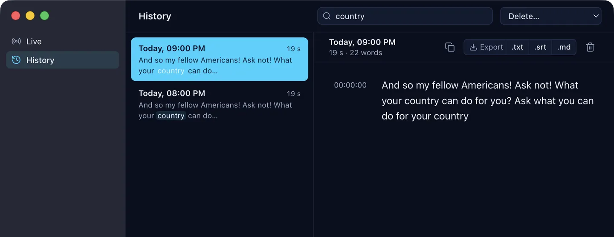

Open source · 100% on-device
Live captions for your Mac. 100% on-device.
Real-time captions for anything playing on macOS. Free, open source, and processed on your Mac.
Real Spokemark output on jfk.wav (public domain), at its real timing. Log
Final caption: And so my fellow Americans! Ask not! What your country can do for you? Ask what you can do for your country.
From the speaker to the screen.
All of it on your Mac.
- ~32 ms
System audio
A CoreAudio process tap copies what the Mac plays. Playback stays audible.
- 0 words
Voice detection
Silero VAD gates the model. 621 s of silence produced nothing.
- 179 ms
Whisper on the GPU
whisper.cpp with Metal re-reads a sliding window every 500 ms.
- ~0.95 s
Agreement
A word is confirmed when two passes agree. Confirmed text never changes.
- 0.45 s
Caption
Painted above every app, from speech to screen, median.
A real Mac app.
A menu bar panel, a caption overlay that floats over full-screen apps, and a history you can search. These are screenshots, not mockups.



- Presets Standard, High contrast and Cinema; 2–3 lines, top or bottom.
- Translation On-device with Apple Translation, macOS 26.
- History Text only. Deleted after 30 days by default, or off.
- Any app Zoom, Meet, YouTube, podcasts: it hears the Mac's output.
Your audio never leaves your Mac.
- 01
Speech recognition runs on your Mac's GPU, in a helper process of the app. Audio is never recorded or saved.
- 02
Transcripts are text only, in your Library folder, deleted after 30 days by default. Or turn history off.
- 03
The only network request in the code is the one-time model download, from Hugging Face, checked by SHA-256.
Check it while captions run. In our test it printed nothing. lsof -nP -i -a -p "$(pgrep -d, -f Spokemark.app)"
Performance
0.45 sfrom speech to caption on screen, median
- 2.3 %
- word error rate over 2,750 words
- 0
- words invented in 621 s of silence
- 1.3 s
- 95th percentile, speech to screen
MacBook Air M4, 16 GB · Standard model (base.en) · a 30-minute session of real speech played through the speakers. Methods, raw numbers and what hasn't been verified yet: RESULTS.md.
Free and open source.
MIT-licensed: read it, fork it, ship it. No account, no trial, no paid tier. The Spokemark name and logo aren't part of the license (brand policy).
RepositoryContributingIssuesSecurity
Build from source
git clone https://github.com/VitoorFranca/spokemark.git && cd spokemark
brew install cmake && npm install
npm run build:native && npm run models
npm run packageSpokemark 0.2.0 · .dmg, 144 MB · released 2026-10-12 · all releases
- Mac
- Apple silicon (M1 or later)
- macOS
- 14.2 or later. Translation needs 26.
- Permission
- System Audio Recording only. No microphone, no screen recording.
- Speech
- English
First launch
Builds aren't notarized yet (no Apple Developer ID), so macOS blocks the first launch. On macOS 15 or later: open it, click Done, then System Settings › Privacy & Security › Open Anyway. On macOS 14: right-click › Open.
Not tested in a real call yet. It captions what the Mac plays, not your microphone. Verify the download with SHA256SUMS.txt.